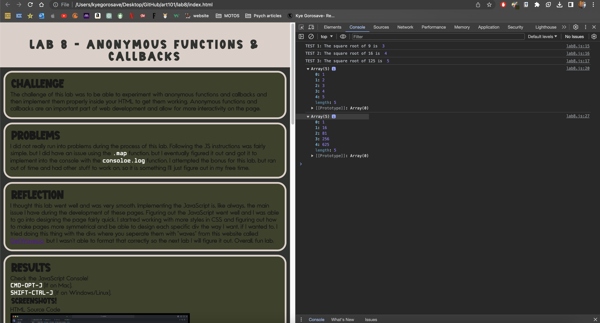
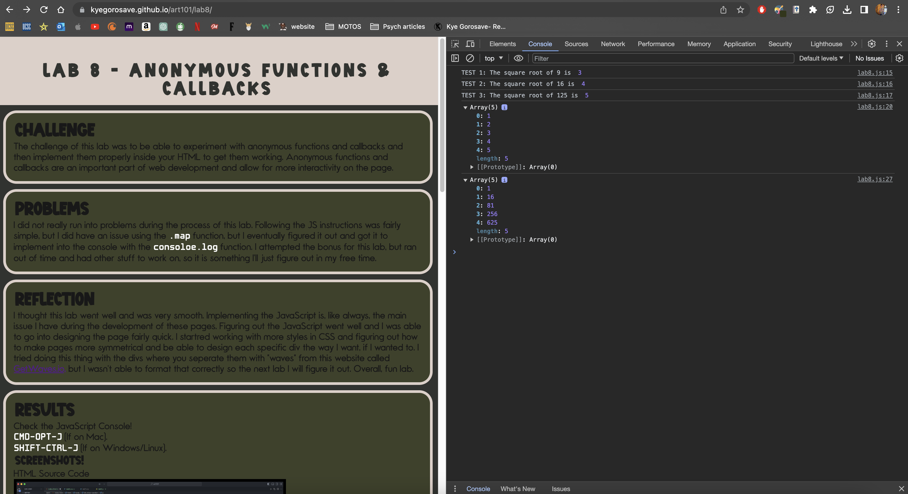

The challenge of this lab was to be able to experiment with anonymous functions and callbacks and then implement them properly inside your HTML to get them working. Anonymous functions and callbacks are an important part of web development and allow for more interactivity on the page.
I did not really run into problems during the process of this lab. Following the JS instructions was fairly simple, but I did have an issue using the .map function, but I eventually figured it out and got it to implement into the console with the consoloe.log function. I attempted the bonus for this lab, but ran out of time and had other stuff to work on, some it is something I'll just figure out in my free time.
I thought this lab went well and was very smooth. Implementing the JavaScript is, like always, the main issue I have during the development of these pages. Figuring out the JavaScript went well and I was able to go into designing the page fairly quick. I startred working with more styles in CSS and figuring out how to make pages more symmetrical and be able to design each specific div the way I want to if I wanted to. I tried doing this thing with the divs where you seperate them with "waves" from this website called GetWaves.io, but I wasn't able to format that correctly so the next lab I will figure it out. Overall, fun lab.
Check the JavaScript Console!
CMD-OPT-J (If on Mac).
SHIFT-CTRL-J (If on Windows/Linux).
HTML Source Code
JavaScript Console
Lab 8 JavaScript File
Local HTML Page W/ Console Open
Live HTML Page W/ Console Open
